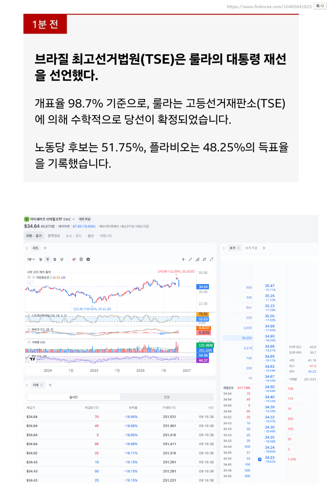

친기업 표방 우파 후보가 낙선하고 좌파 후보인 룰라가 당선됨에 따라 '지수'가 하루만에 -18% 떨어지는 대폭락 발생중

친기업 표방 우파 후보가 낙선하고 좌파 후보인 룰라가 당선됨에 따라 '지수'가 하루만에 -18% 떨어지는 대폭락 발생중
이야 대가리에 무슨 생각을 하면 이걸 정훈교육 타령하지?ㅋㅋ
아무튼 좌파 후보 탓하면 정훈교육이 맞긴해
저건 아무튼 좌파 후보 탓이 아니라 맞는 말인데?
왜 맞는 말인데?
룰라가 되면 기업들한테 뭐가 좋은데?
룰라가 되서 기업들한테 안좋으니까 떨어졌다는 증거가 어디 나와있는데?
브라질 증시 및 자산 반응:대선 1차 투표(10월 5일) 직후 보우소나루 후보가 선전했을 때는 친시장 정책 기대감으로 브라질 증시(Bovespa)가 약 9% 폭등하며 사상 최고치를 기록한 바 있습니다.
https://news.einfomax.co.kr/news/articleView.html?idxno=4437786
기사도 있는데? 모르고 그렇게 말하는거냐?
이런 애들이 당당하게 정훈교육 타령하고 다닌다니까?
뭐 아는 것도 없으면서 무지성 정훈교육 타령
정훈교육 맞는거는 둘째치고 선거 프리미엄이나 과거 지표 같은 걸로 충분히 설명 가능하다고 생각은 했는데 완전히 객관적인 지표가 부족하구나. 나는 너처럼 대충 아가리 터는 사람은 아니니 9시간쯤 뒤에 다시 확인해볼게.
ㅋㅋㅋ 이미 털어놓고 개소리하고 있네
대가리가 정상이면 친기업 후보가 떨어지면 당연히 주가가 떨어지지
대가리가 정상이면 그래프가 급등 후에 원복인지 실제 침체인지 알아볼 생각을 해야지.ㅋㅋ 그래서 9시간 뒤에 브라질 증시를 봐야 한다는 것인데 너같은 애들이 거기까지 가기는 힘든게 사실이긴해.
ㅋㅋㅋ 아 지금 기사가 한 두개가 아닌데 다 좆도 모르고 쓴거네? Jp모건도 좆이지?
브라질 국채 20% 찍겠네
3!4!
룰라가 옛날엔 잘했는데 지금은 왜그럴까
미국하고 반목해서 그런가
브라질 주식과 채권은 사는게 아님
ㄹㅇ
???:보통의 하루
감옥빵 룰라가 이겼네
왠만한 애가 나왔으면 룰라가 졌을텐데.. 참 인물이 그케 없나. 감옥 있는 전직 대통령 아들이 나오고, 나 대통령되면 석방 함. .. 와 물가 상승률 4.4% 찍고 있는 애가 다시 대통령 됐으니 꼬라박을수 뿐이.. 룰라>친중. 떨어진애>친미. 전직 대통령 감옥+트럼프 꼴보기 싫어 표가 몰려서 차악을 선택한 선거인듯. 츳츳.

브라질은 그냥 답없음 좌는 부자 조지고 포퓰리즘, 우는 빈부격차 증대 및 서민 무시.
거기에 주 정부 및 경찰들은 부패했고.
대학나온 애들 머리에 든건 나라 뜰 생각이 대부분임.